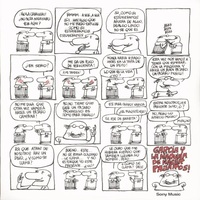

Charly con La Máquina de Hacer Pájaros:
Sobre La Máquina de Hacer Pájaros:
La Máquina de Hacer Pájaros fue un supergrupo compuesto por Charly García, Oscar Moro, Carlos Cutaia, Gustavo Bazterrica y José Luis Fernández, la cual estuvo activa entre 1976 y 1977. Si bien mientras estaba en actividad tuvo una escasa aceptación por parte del público, años después con la difusión de Serú Girán alcanzaron un verdadero reconocimiento.
Adelantado para su época, introdujo un sonido progresivo poco presente en el rock de nuestro país; con influencias de bandas como Genesis, Yes y Pink Floyd.

Discografía
-

La Máquina de Hacer Pájaros (1976)
Un álbum principalmente de rock progresivo con algunos elementos de folk, donde García elige abandonar sus letras adolescentes y comenzar a realizar música más elaborada. Es considerado uno de los más costosos del rock nacional.
-
Películas (1977)
A diferencia del primer disco donde había una gran variedad de composiciones, este álbum contiene una serie de canciones ligadas por un concepto, hecho que muestra las influencias del rock sinfónico. Si bien la banda sigue denotando su sonido de rock progresivo-sinfónico, la variedad rítmica e instrumental a lo largo de la obra conceptual advierten un avance en cuanto a los arreglos y la composición de la banda.